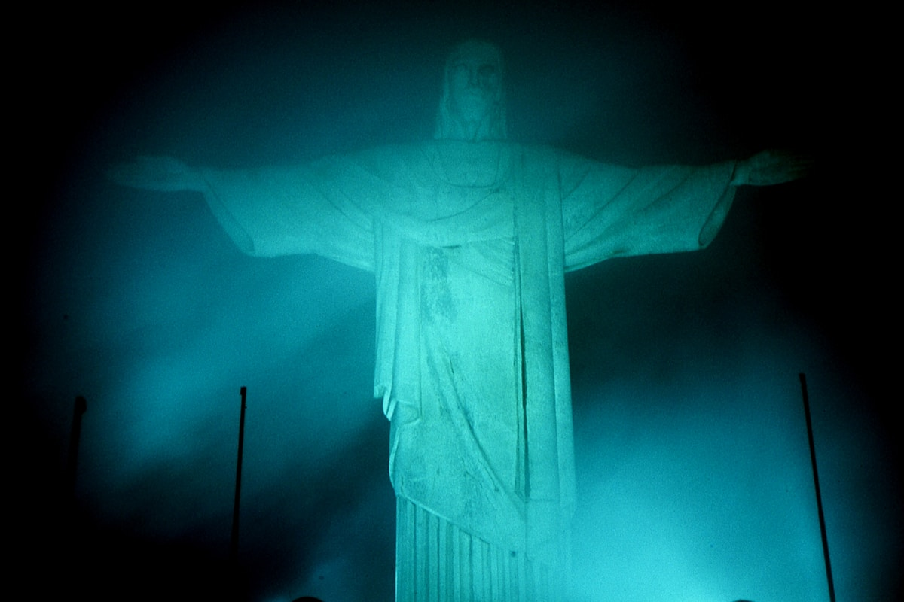
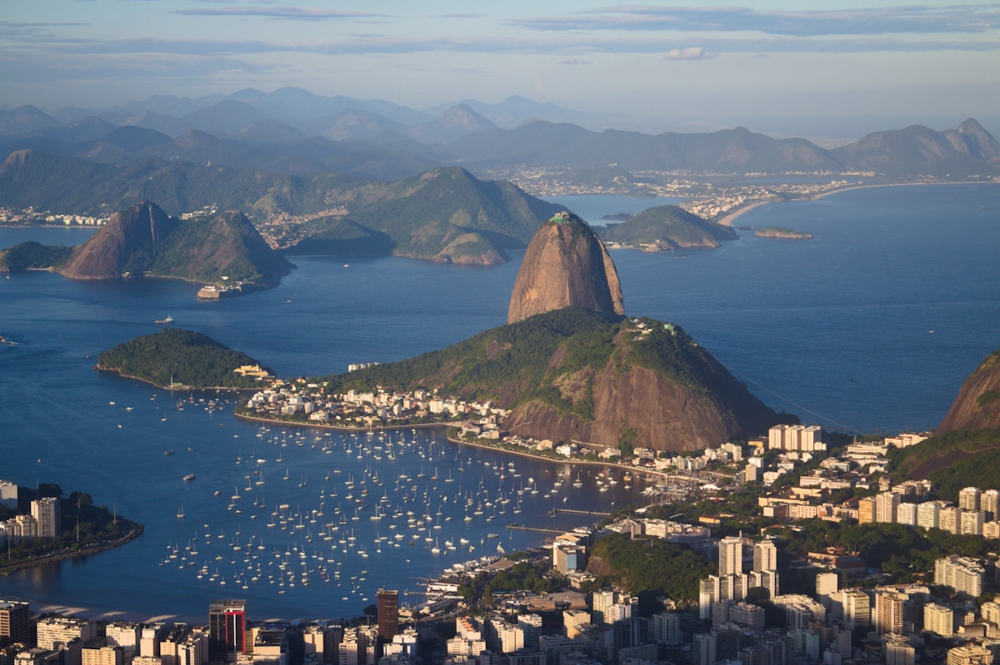
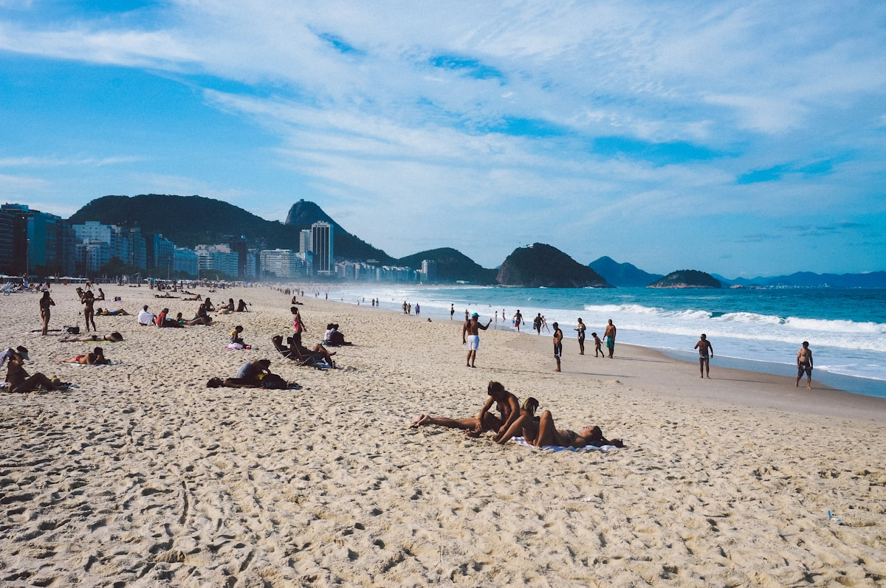
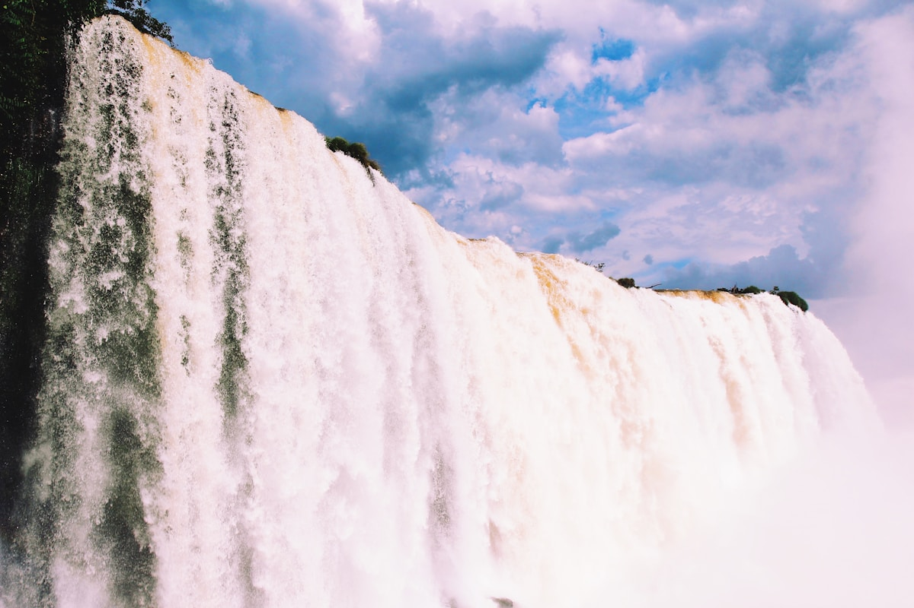
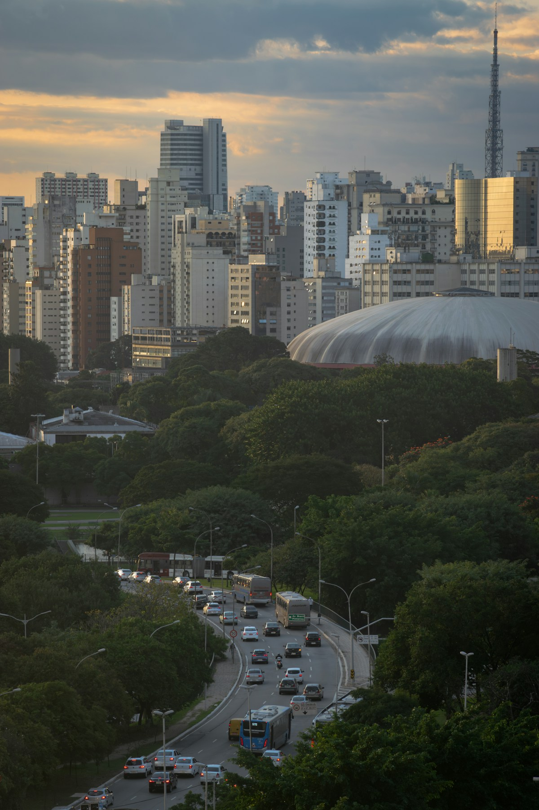
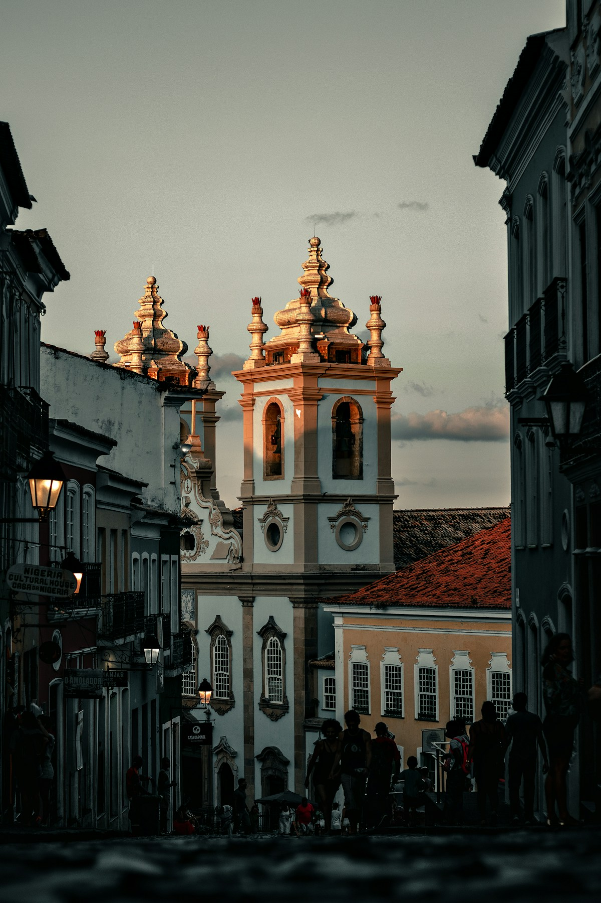
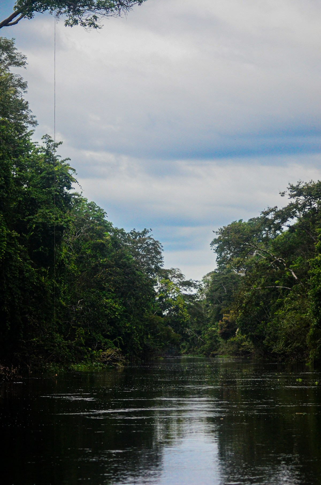
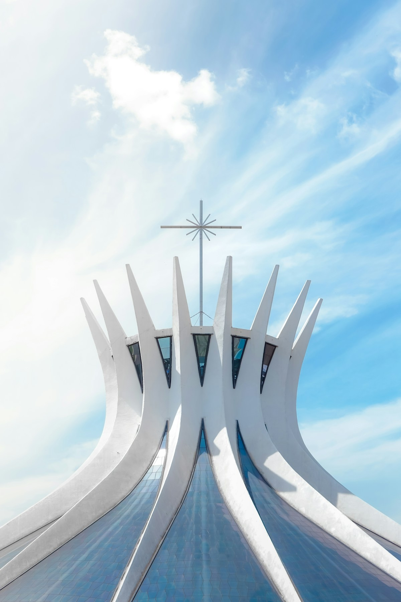

| 事项 | 结论 |
|---|---|
| 事项 | 结论 |
| 签证（最关键） | 中国护照需办巴西旅游签证（e-Visa 电子签约 3–10 天出签，或使馆贴签）；有效期内单次最长停留 90 天，材料含机票、酒店、行程单、银行流水、在职证明 |
| 推荐方案 | 里约 4 天 → 伊瓜苏 2 天 → 圣保罗 2 天 → 萨尔瓦多 2 天 → 亚马逊 3 天 → 巴西利亚 1 天 + 返程 |
| 返程约束 | 第 19–20 天从圣保罗返京（经马德里约 25h）；国际航班建议订凌晨起飞，留足 19 天完整行程 |
| 行程链 | 北京 → 里约 → 伊瓜苏 → 圣保罗 → 萨尔瓦多 → 马瑙斯 → 巴西利亚 → 北京 |
| 预算（人均） | 经济 20000–30000 ／ 标准 40000–60000 ／ 舒适 90000–130000（人民币） |
| 三件提前事 | ① 办巴西签证 ② 订国内航班（圣保罗—马瑙斯等长航线提前 1 个月）③ 基督山/糖面包门票提前 2 周官网订 |
| 季节提醒 | 12–3 月夏季湿热 + 狂欢节（2 月中下旬）；5–9 月旱季凉爽、亚马逊水位低看沙滩；南部冬天（6–8 月）可去伊瓜苏但水温低 |
| 支付 | 雷亚尔现金 + Visa/Master 卡为主；Uber/99 打车 App 全巴西通用，比出租车便宜 30–50% |
以下为 20 天 19 晚的推荐节奏：东南进（里约）、东北过（萨尔瓦多）、北部深入亚马逊，最后经巴西利亚回圣保罗返程。每日主景点 ≤2 个，国内段全部靠飞机，亚马逊段留足 3 天进雨林。
| 日期 | 行程 | 过夜地 | 主题 |
|---|---|---|---|
| D1 抵里约 | 北京✈圣保罗（约 25h）→ 转机✈里约，入住科帕卡巴纳，休整 | 里约 | 抵达+倒时差 |
| D2 | 基督山（小火车）→ 糖面包山缆车，俯瞰瓜纳巴拉湾全景 | 里约 | 里约名片 |
| D3 | 科帕卡巴纳/伊帕内玛海滩 → 塞勒隆阶梯 → 拉帕拱桥 | 里约 | 海滩+街区 |
| D4 | 里约大教堂 → 马拉卡纳球场 → 机动（贫民窟 tour/植物园） | 里约 | 机动日 |
| D5 | 里约✈伊瓜苏（约 2h），巴西侧全景栈道 | 伊瓜苏 | 飞伊瓜苏 |
| D6 | 过境阿根廷侧：魔鬼咽喉栈道 + 上下环线步道 | 伊瓜苏 | 魔鬼咽喉 |
| D7 | 伊瓜苏✈圣保罗，保利斯塔大道 + 日本街 | 圣保罗 | 飞圣保罗 |
| D8 | MASP 艺术馆 → 市政市场 → 傍晚✈萨尔瓦多 | 圣保罗 | 圣保罗收尾 |
| D9 | 佩洛里尼奥老城（世界遗产）+ 圣方济教堂 + 战舞表演 | 萨尔瓦多 | 老城一日 |
| D10 | 红瓦市场购物 → 萨尔瓦多✈马瑙斯（经圣保罗） | 马瑙斯 | 飞亚马逊 |
| D11 | 两河交汇 → 进丛林旅馆 → 徒步 → 夜间找凯门鳄 | 亚马逊 | 雨林day1 |
| D12 | 粉红海豚 → 食人鱼垂钓 → 河上村落 | 亚马逊 | 雨林day2 |
| D13 | 返马瑙斯：亚马逊剧院 → ✈巴西利亚 | 巴西利亚 | 回城+转场 |
| D14 | 三权广场 + 国会 + 巴西利亚大教堂 + 伊塔马拉蒂宫 | 巴西利亚 | 现代主义日 |
| D15 | JK 纪念堂 → ✈圣保罗，傍晚自由购物 | 圣保罗 | 飞圣保罗 |
| D16 | 圣保罗购物日：Havaianas、咖啡、蜂胶，回程补给 | 圣保罗 | 购物日 |
| D17 | 市政市场 → 蝙蝠侠巷涂鸦 → 整理行李 | 圣保罗 | 机动日 |
| D18 | 自由安排：Ibirapuera 公园 / 圣保罗大教堂 | 圣保罗 | 机动日 |
| D19 返程 | 圣保罗瓜鲁柳斯✈北京（经马德里约 25h，凌晨起飞） | 机上 | 返程日 |
| D20 | 马德里经停 → 抵京，结束 20 天巴西之旅 | — | 到家 |
以下为 20 天全程的逐小时执行时间线，可当作「当天打开照着走」的清单。标注 ※ 的可选项视体力与天气取舍。
| 时间 | 事项 |
|---|---|
| 13:30–次日10:00 | 北京✈圣保罗（国航 CA897 经马德里，总程约 25h，787-9）。圣保罗瓜鲁柳斯入境，转机✈里约（约 1h10min） |
| 10:30–12:30 | 入住科帕卡巴纳海滩附近酒店（里约最安全便利的游客区），倒时差休息 |
| 13:00–15:00 | 科帕卡巴纳海滨大道（免费）：黑白马赛克步道 + 瓜纳巴拉湾海风，第一眼里约 |
| 16:00–18:00 | 伊帕内玛海滩（免费）：阿普多角看日落，波萨诺瓦歌曲诞生地 |
| 19:30 | 晚餐：巴西烤肉 churrasco 自助（人均 R$80–120），早点睡倒时差 |
| 时间 | 事项 |
|---|---|
| 07:30–08:00 | 乘科帕卡巴纳小火车（trem do Corcovado）上山，提前 2 周官网订票避免售罄 |
| 08:30–10:30 | 基督救世主像（小火车往返+门票约 R$130–150）：里约地标，俯瞰全城与瓜纳巴拉湾 |
| 10:30–12:00 | 下山转场到糖面包山缆车站（Urica） |
| 12:00–13:00 | 午餐：山下餐厅 feijoada 黑豆炖肉（巴西国菜，周五传统） |
| 13:30–17:30 | 糖面包山（两段式缆车往返约 R$150）：登顶看全城 + 科尔科瓦多山同框，日落前光影最佳 |
| 19:00 | 晚餐：Lapa 区巴西烤肉，感受桑巴街区氛围 |
| 时间 | 事项 |
|---|---|
| 08:30–11:00 | 塞勒隆阶梯（Escadaria Selarón，免费）：215 级彩色瓷砖阶梯，艺术家塞拉隆献给里约的礼物，清晨人少 |
| 11:00–12:30 | 拉帕拱桥（Arcos da Lapa，免费）：18 世纪引水渠，如今是桑巴酒吧街区地标 |
| 12:30–14:00 | 午餐：伊帕内玛 botequim 小酒馆小吃（cod fish balls 炸鱼球 + 生啤） |
| 14:30–17:30 | 科帕卡巴纳/伊帕内玛海滩（免费）：日光浴、沙滩排球、冲浪（可选），夕阳时分最出片 |
| 18:30 | 晚餐：海滨海鲜餐厅（烤虾、炸鱿鱼），看夜幕下的海滩 |
| 时间 | 事项 |
|---|---|
| 08:30–10:30 | 里约大教堂（免费）：圆锥形现代主义建筑，彩色玻璃从顶部洒下光线 |
| 10:30–13:00 | 马拉卡纳体育场（门票约 R$60，含导览）：足球圣殿，1950/2014 世界杯决赛场地 |
| 13:00–14:00 | 午餐：滨海大道快餐/本地排挡 |
| 14:30–17:30 | 自由选择：贫民窟导览 tour（约 R$100–150 含向导）或里约植物园（约 R$45，王莲池+兰花温室） |
| 19:00 | 晚餐 + 收拾行李，准备次日清晨飞伊瓜苏 |
| 时间 | 事项 |
|---|---|
| 08:00–10:00 | 里约✈伊瓜苏（约 2h，Gol/LATAM），机场打车/预订接机去巴西侧公园 |
| 10:30–11:00 | 伊瓜苏国家公园（外国成人约 R$113，官网预约时段）：进门即闻水声 |
| 11:00–13:00 | 全景步道（Panoramic Trail）：275 条瀑布连成的 3km 水墙，最出片机位 |
| 13:00–14:00 | 园内 buffet 午餐（约 R$50） |
| 14:30–16:30 | 魔鬼咽喉观景栈道：半圆形悬挑平台正对最宽瀑布群 |
| 17:30 | 入住伊瓜苏小镇（Foz do Iguaçu）酒店，晚餐阿根廷烤肉 |
| 时间 | 事项 |
|---|---|
| 07:30–08:30 | 打车/巴士过境到阿根廷侧伊瓜苏公园（外国成人 AR$60,000，官网购票） |
| 09:00–11:00 | 上环线（Upper Circuit）：从瀑布顶上俯瞰，水汽扑面 |
| 11:00–12:30 | 下环线（Lower Circuit）：贴近瀑布底部，彩虹频现 |
| 12:30–13:30 | 园内午餐（阿根廷 empanada 饺子 + 牛排） |
| 14:00–16:30 | 魔鬼咽喉栈道（Garganta del Diablo）：乘丛林小火车后步行 1.1km 栈道，世界最大瀑布群的正面冲击 |
| 17:30 | 返回巴西侧，晚餐 + 准备次日飞圣保罗 |
| 时间 | 事项 |
|---|---|
| 08:30–10:10 | 伊瓜苏✈圣保罗（约 1h40min），入住保利斯塔大道（Avenida Paulista）附近 |
| 11:00–13:00 | 保利斯塔大道（免费）：金融街 + 街头艺人 + 周末封路变步行街 |
| 13:00–14:00 | 午餐：自由区日本街（Liberdade）拉面/寿司——全球最大日裔社区，灯柱都是日式鸟居 |
| 14:30–17:30 | 圣保罗艺术博物馆 MASP（约 R$70）：红色悬挑立柱建筑 + 梵高/莫奈/德加名画，地下展藏免费 |
| 18:00 | 晚餐：保利斯塔餐厅 fogo de chão 系巴西烤肉 |
| 时间 | 事项 |
|---|---|
| 08:30–10:30 | 圣保罗大教堂（免费）+ 市中心 Sé 广场（自由广场的鸽子与咖啡） |
| 10:30–12:30 | 市政市场（Mercado Municipal）：彩色玻璃穹顶 + mortadella 三明治、巴西咖啡、水果杯 |
| 12:30–13:30 | 午餐：市场内 Pastel de feira 炸馅饼 |
| 15:00–15:05 | 圣保罗✈萨尔瓦多（约 2.5h，Gol/LATAM） |
| 17:30 | 入住萨尔瓦多上城老城区酒店，晚上佩洛里尼奥老城初逛 |
| 时间 | 事项 |
|---|---|
| 08:30–11:00 | 佩洛里尼奥（Pelourinho，世界遗产，免费）：彩色殖民建筑 + 鹅卵石巷 + 街头乐手 |
| 11:00–12:30 | 圣方济各教堂（约 R$10）：内外贴满金箔的巴洛克杰作，「黄金教堂」 |
| 12:30–13:30 | 午餐：Acarajé 炸豆饼夹虾（巴伊亚街头名物，约 R$15） |
| 14:00–16:00 | 黑人玫瑰圣母堂（免费）+ 广场看巴西战舞 capoeira即兴表演 |
| 16:30–18:00 | 拉塞达升降机（Lacerda Elevator，单程 R$0.15）：上城/下城垂直交通，俯瞰海湾日落 |
| 19:00 | 晚餐：Moqueca 椰香炖鱼/炖虾 + 手鼓音乐 |
| 时间 | 事项 |
|---|---|
| 08:30–11:00 | 红瓦市场（Mercado Modelo，约 R$20 可逛 1–2h）：巴伊亚彩裙、木雕、陶瓷手工艺品，砍价空间大 |
| 11:00–12:00 | 午餐：萨尔瓦多最后一餐（moqueca 或 acarajé） |
| 13:00–19:00 | 萨尔瓦多✈马瑙斯（约 3.5h，多数经圣保罗中转，总程 5–7h），选上午段航班 |
| 19:30 | 入住马瑙斯市区酒店，晚餐亚马逊河鱼（tambaqui） |
| 时间 | 事项 |
|---|---|
| 08:00 | 向导到酒店接人，乘快艇沿内格罗河（黑水河）进亚马逊 |
| 09:30–11:30 | 两河交汇（Meeting of Waters）：黑水内格罗河与黄水索利蒙伊斯河并行 6km 不相融，巴西最奇观之一 |
| 12:00–13:30 | 抵达丛林旅馆（floating lodge）入住，午餐丛林简餐 |
| 14:00–17:00 | 丛林徒步：向导讲解药用植物、巨型王莲、蚂蚁与猴子，运气好看到树懒 |
| 18:30 | 夜间独木舟寻找凯门鳄（caiman），手电扫过水面闪红光 |
| 时间 | 事项 |
|---|---|
| 06:30 | 日出独木舟观鸟：金刚鹦鹉、翠鸟、朱鹮成排站枝 |
| 08:30–10:30 | 粉红河豚（boto）观赏：亚马逊独有的粉色淡水豚，部分团可下水互动（额外约 USD 55） |
| 12:00–13:00 | 丛林午餐：上午钓的鱼现场烤（食人鱼刺少味美） |
| 13:30–15:30 | 食人鱼垂钓：向导发钓竿，鸡肉饵，好钓程度看季节 |
| 16:00–18:00 | 河上村落访问：高脚屋社区、木薯加工、手工艺交换 |
| 19:00 | 晚餐 + 篝火，南半球星空银河清晰可见 |
| 时间 | 事项 |
|---|---|
| 07:00–09:00 | 丛林晨间散步 + 早餐 |
| 09:30–11:00 | 乘快艇返回马瑙斯，途中再看河岸村落与独木舟渔夫 |
| 12:00–13:00 | 午餐：马瑙斯市区 |
| 13:30–15:30 | 亚马逊剧院（Teatro Amazonas，门票约 R$40）：橡胶时代用欧洲材料建成的金碧歌剧殿堂，穹顶彩绘必看 |
| 16:30–20:00 | 马瑙斯✈巴西利亚（约 3.5h，部分需经停），入住酒店 |
| 时间 | 事项 |
|---|---|
| 08:30–11:00 | 三权广场（Praça dos Três Poderes，免费）：国会双子塔 + 上下碗形穹顶、总统府高原宫、最高法院，尼迈耶三部曲 |
| 11:00–12:30 | 巴西利亚大教堂（免费）：16 根弧形混凝土柱如双手祈祷，彩色玻璃天顶，上午光线最好 |
| 12:30–13:30 | 午餐：巴西利亚本地烤肉/ buffet |
| 14:00–16:00 | 伊塔马拉蒂宫（外交部，免费）：水面上的白色宫殿，内部是巴西现当代艺术殿堂 |
| 16:30–18:00 | 电视塔观景台（免费）：俯瞰「飞机形」城市中轴线，日落时分 |
| 时间 | 事项 |
|---|---|
| 08:30–10:30 | 博斯克大教堂（Santuário Dom Bosco，免费）：整片蓝色玻璃穹顶，光影绝美，巴西利亚最被低估的教堂 |
| 10:30–12:00 | JK 纪念堂（免费外观）或补拍尼迈耶建筑 |
| 12:00–13:00 | 午餐 |
| 14:00–15:40 | 巴西利亚✈圣保罗（约 1h40min，航班密集） |
| 16:30 | 入住圣保罗酒店，傍晚自由活动（可去蝙蝠侠巷拍涂鸦） |
| 时间 | 事项 |
|---|---|
| 08:30–11:00 | 市政市场（Mercado Municipal）：mortadella 三明治 + 整颗巴西坚果 + 咖啡豆伴手礼 |
| 11:00–13:00 | 蝙蝠侠巷（Batman Alley，免费）：全天候街头涂鸦艺术街，出片圣地 |
| 13:00–14:00 | 午餐：圣保罗市中心 |
| 14:30–17:30 | 购物补货：Havaianas 人字拖（约 R$50–80）、蜂胶、Casas Bahia 药妆、咖啡 |
| 18:30 | 晚餐：日本街或意大利区（圣保罗 120 万日裔 + 意裔） |
| 时间 | 事项 |
|---|---|
| 08:30–11:00 | 伊比拉普埃拉公园（Ibirapuera，免费）：南美最大城市公园之一，日本馆 + 现代艺术馆 + 湖泊喷泉 |
| 11:00–12:30 | 圣保罗大教堂（免费）：哥特复兴建筑，Sé 广场鸽子群 |
| 12:30–13:30 | 午餐：Pastel 炸馅饼 + caldo de cana 甘蔗汁 |
| 14:30–17:30 | 自由安排：MASP 补看地下展藏 / 保利斯塔博物馆 / 夜游丽贝卡区 |
| 19:00 | 晚餐 + 打包行李 |
| 时间 | 事项 |
|---|---|
| 08:30–11:00 | 自由活动：咖啡店慢坐（巴西是全球最大咖啡生产国）/ 圣保罗艺术博物馆补课 |
| 11:00–13:00 | 午间小逛：奥斯卡·弗莱雷大道（Faria Lima）街区 |
| 13:00–14:00 | 午餐 |
| 14:30–17:00 | 回酒店休整，提前处理退税单据、整理免税购物 |
| 19:00 | 晚餐：最后一顿巴西烤肉 + 开胃酒 |
| 时间 | 事项 |
|---|---|
| 20:00–21:00 | 退房，打车到瓜鲁柳斯国际机场（GRU），提前 3h 值机 + 退税盖章 |
| 23:55–次日09:10 | 圣保罗✈马德里（国航 CA898，约 10h50min） |
| 11:00–次日05:30 | 马德里经停后✈北京（约 11h），机上跨日 |
| 时间 | 事项 |
|---|---|
| 05:30–07:00 | 抵达北京首都机场，入境、取行李 |
| 07:30–12:00 | 回家休整，补觉倒时差（巴西比北京慢 11h） |
| 12:00 | 午餐后自由安排，巴西 20 天行程正式结束 |
必去（必去）/ 顺路（顺路）/ 可跳过（可跳过）。

必去
必去
必去
必去
必去
必去
顺路图片为 Unsplash 主题图（基督山、糖面包山、科帕卡巴纳、伊瓜苏、保利斯塔、萨尔瓦多老城、亚马逊雨林、巴西利亚等均为巴西实景），用于页面配图。更多免费景点：里约植物园、拉帕拱桥、圣保罗伊比拉普埃拉公园、萨尔瓦多红瓦市场、巴西利亚电视塔。
点击左侧节点可在地图上定位；点击地图 marker 会高亮对应节点。坐标为 WGS-84 转 GCJ-02 纠偏后标注。
以下为单人、不含购物的估算，人民币计价；出发地基准北京。汇率按 1 人民币 ≈ 0.7 巴西雷亚尔（1 BRL ≈ 1.43 元）估算。往返国际机票按淡季转机 7000–11000 元、经马德里一停 11000–15000 元计；巴西国内段 6 程是第二大开支。
| 项目 | 经济（20000–30000） | 标准（40000–60000） | 舒适（90000–130000） |
|---|---|---|---|
| 往返机票 | 转机 7000–9000 | 国航经马德里 11000–15000 | 可改签/灵活舱 22000–28000 |
| 住宿（19 晚） | 民宿/青旅 250–400/晚 | 三星+景区酒店 600–900/晚 | 五星/度假村 1800–3000/晚 |
| 境内交通（6 程） | 提前 1 个月订 2500–3500 | Gol/LATAM 正价 4000–6000 | 灵活时段/商务舱 9000–13000 |
| 门票与活动 | 基础景点 800–1200 | 含丛林团/球场 3500–5000 | 高端丛林团+向导 8000–12000 |
| 餐饮（20 天） | 街头小吃+快餐 3500–4500 | 正常下馆子 6500–9000 | 烤肉/海鲜高配 15000–22000 |
把行程整体挪到狂欢节（圣灰星期三前 5 天）：里约延长到 6 天看桑巴游行（球馆/街区派对）、萨尔瓦多老城狂欢节也全球知名；机票住宿贵 2–3 倍且需提前 3–4 个月抢，亚马逊雨季可下水。带娃或预算有限的建议避开。
如果更想看野生动物（美洲豹、巨嘴鸟、水豚），可砍亚马逊马瑙斯段，改为飞库亚巴（Cuiabá）进入潘塔纳尔湿地 3 天（旱季 6–9 月最佳，野生动物密度全球最高）；其余城市顺序不变，湿地团费与亚马逊团相仿。
| 方式 | 时长 | 参考价 | 备注 |
|---|---|---|---|
| 北京⇄圣保罗（一停） | 总程约 25h（经马德里） | 往返 11000–15000 元 | 国航 CA897/898 787-9，周一/四/日执飞，圣保罗到北京无真正直飞 |
| 北京⇄圣保罗（转机） | 28–35h（1–2 停） | 6000–11000 元 | 经迪拜/多哈/阿姆斯特丹，阿联酋/荷航/法航，旺季涨价 |
| 里约/圣保罗✈伊瓜苏 | 约 1h40min–2h | 单程 500–900 元 | Gol/LATAM 多班，提前 30 天订便宜 30%+ |
| 圣保罗✈萨尔瓦多 | 约 2.5h | 单程 700–1100 元 | Gol/LATAM，每天多班 |
| 萨尔瓦多✈马瑙斯 | 3.5h–5h（多经圣保罗） | 单程 1000–1600 元 | 无直飞，选上午航班避开延误连锁 |
| 马瑙斯✈巴西利亚✈圣保罗 | 3.5h + 1h40min | 单程 900–1500 元 | 马瑙斯—首都段航班少，提前 1 个月订 |
| 区域 | 价格/晚 | 优点 | 短板 |
|---|---|---|---|
| 里约·科帕卡巴纳 | 经济 300–500 / 标准 600–1000 | 海滩 + 地铁 + 游客区安全 | 旺季（12–2 月）贵，旧楼多 |
| 里约·伊帕内玛 | 标准 800–1500 | 更清净高档，日落绝美 | 价格高，离地铁稍远 |
| 伊瓜苏小镇 | 经济 250–400 / 标准 450–700 | 离两国公园近，物价低 | 城市本身没有亮点 |
| 圣保罗·保利斯塔 | 经济 300–450 / 标准 500–900 | 地铁枢纽，吃喝方便 | 周末街静 |
| 萨尔瓦多·上城老城 | 经济 250–400 / 标准 400–700 | 步行到佩洛里尼奥 | 老楼隔音一般，夜游注意安全 |
| 马瑙斯·市区 | 经济 250–400 / 标准 450–750 | 进丛林团集合点近 | 夏季湿热，设施偏旧 |